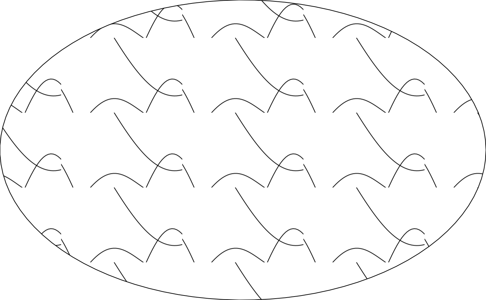

fill_scribble() builds a grid::pattern() fill value from several
randomly wandering lines, each a random finite sum of sine harmonics
(see the internal scribble_lines() helper) rather than a smooth noise
field or a scattered discrete motif – giving a loose, hand-drawn
scribble texture built from genuinely continuous strokes.
Usage
fill_scribble(
color = "black",
direction = c("horizontal", "vertical"),
n_lines = 5L,
n_harmonics = 3L,
amplitude = 0.35,
resolution = 200L,
linewidth = 1,
spacing = 0.25,
aspect = 1,
seed = 1L,
extend = "repeat"
)Arguments
- color
Line colour. Default
"black".- direction
Either
"horizontal"(lines run left-right) or"vertical"(lines run top-bottom). Default"horizontal".- n_lines
Number of wandering lines per tile. Must be a positive integer. Default
5L.- n_harmonics
Number of sine harmonics summed per line. Must be a positive integer. Default
3L.- amplitude
Maximum total wiggle amplitude, as a
"npc"fraction of the tile, split acrossn_harmonics(so more harmonics each contribute proportionally less). Must be a non-negative number. Default0.35.- resolution
Number of points sampled along each line. Must be a positive integer of at least
2L. Default200L.- linewidth
Line width. Must be a positive number. Default
1.- spacing
Baseline tile size, as a fraction of the target's bounding box. Must be a positive number. Default
0.25.- aspect
Width-to-height ratio of the target polygon's bounding box. Must be a positive number. Default
1(a square bounding box).- seed
Integer seed for the random harmonics. Default
1L.- extend
Passed to
grid::pattern(). Default"repeat".
Value
A pattern object as returned by grid::pattern(), suitable for
use as the fill argument to grid::gpar().
Details
A wandering open line poses a tiling problem none of the other
fill_*() helpers have: fill_hatch()'s diagonal and fill_noise()'s
raster both tile by construction (a straight corner-to-corner line, or
an already-periodic field), and fill_stipple()/fill_scatter()/
fill_halftone() sidestep the problem entirely by keeping their
scattered content margined well clear of the tile edge. A wandering
line that's meant to look continuous can't stay clear of the edge –
it has to run all the way to it, and pick up again at exactly the right
place, in both position and slope, on the opposite edge, or the seam
shows as a visible kink. fill_scribble() gets this for free by
building each line as a random sum of sine harmonics at integer
frequencies only: over one full period, such a sum always returns
exactly to its starting value and slope (to floating-point precision),
so consecutive tile copies join with no visible seam – confirmed
visually with extend = "repeat" at small spacing, including
repeated copies (unlike the polygon-in-a-genuinely-repeated-tile issue
documented at fill_scatter(), open-line content showed no clipping or
distortion in testing).
Known limitation – direction is fixed, not an arbitrary angle
Every other angled helper (fill_hatch()/fill_crosshatch()/
fill_stripe()) achieves an arbitrary angle by reshaping the tile
itself (via hatch_tile_dims()) around content that's a plain
corner-to-corner diagonal. That trick was tried here first and found
not to generalize: reshaping the tile around a wandering line just
anisotropically stretches its wiggle rather than rotating it, since
the line's content isn't a bare diagonal the tile shape can
reinterpret. A genuinely rotated wandering line would need the tile
built as a rotated/sheared parallelogram with edge-matching worked
out for a curve rather than a segment – no such technique exists in
this package yet. direction is therefore restricted to "horizontal"
(lines run left-right, periodic tiling along that axis) or
"vertical" (lines run top-bottom instead, i.e. along/across from
scribble_lines() mapped to y/x rather than x/y) – there is
no angle argument. Revisit if a real sketch needs an arbitrary
angle.
Examples
draw(shape_circle(fill = fill_scribble(n_lines = 4L, seed = 6602L)))
